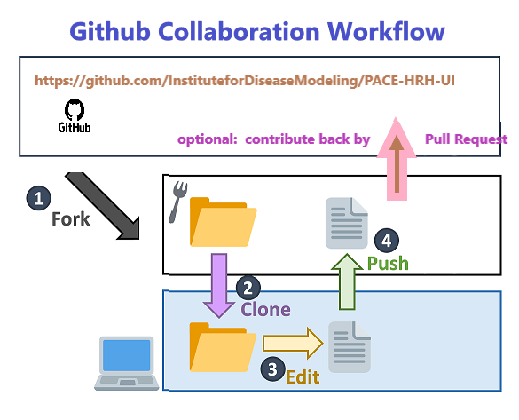
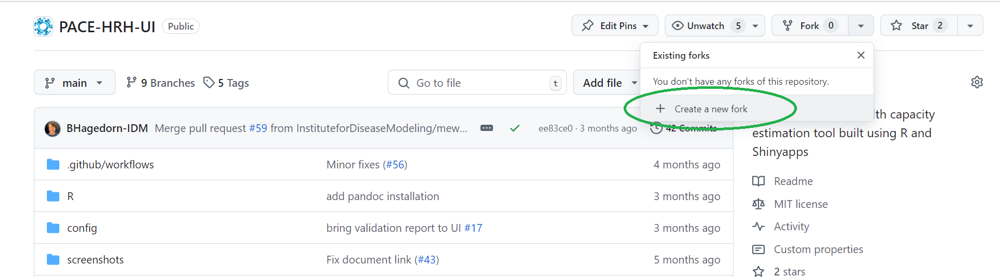
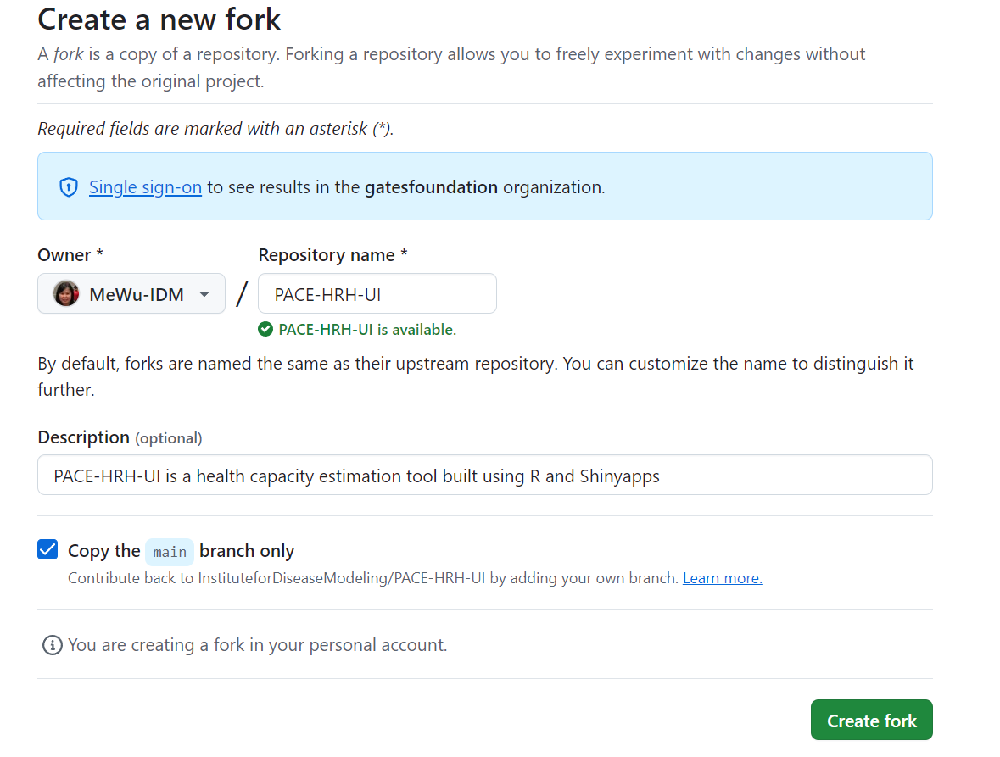
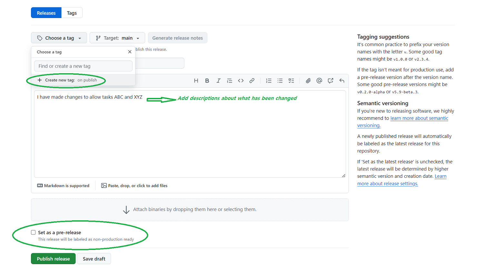

graph TD
spacer1[ ]:::invisible
classDef subgraphTitle font-size:30px,color:Red
classDef text font-size:16px;
subgraph User
style User fill:#00FF00,fill-opacity:0.1
Browser[<b>Browser profile</b>]:::text
LocalStorage[<b>HTML5 Local Storage</b>]:::text
end
class User subgraphTitle;
subgraph Server
style Server fill:#0000FF,fill-opacity:0.1
R[<b>R base and dependent packages</b>]
ShinyApp[<b>Shiny App</b>]
Pace[<b>PACEHRH Package</b>]
GlobalR[<b>global.R</b>]
ConfigFiles[<b>Config Files</b>]
FileSystem[<b>Server Filesystem</b>]
SQLite[(<b>SQLite Or other storage options</b>)]
end
class Server subgraphTitle;
User -->|Creates Simulation Request| ShinyApp
ShinyApp -->|Stores session Identifier and Simulation file Index| LocalStorage
LocalStorage -->|isolated store| Browser
ShinyApp -->|Global settings| GlobalR
ShinyApp -->|Set simulation parameters| ConfigFiles
ShinyApp -->|Smulation Computation| Pace
ShinyApp -->|Stores Simulation Results| FileSystem
Pace --> R
FileSystem --> |Download results|User
FileSystem -.->|Optional| SQLite
PaceHRH UI Technical Knowledge Trasnfer Document
Working with Github. Update Files and Pull Requests
- Forking the Repository

To make changes without affecting the original project, you can create a separate copy by forking the repository. 
This will bring you to the next page where you can select the account you want to fork the repository to.

Develop your code in a new branch and create pull request After forking the repository, you can create a new branch to develop your code and test the app. Once you are done, you are free to push the work into your own fork. If you want to contribute back to the main repository, for example, fixing a critical bug or having a major improvement feature; you can create a pull request to ask for reviewing and merging your changes to the original repository. (Decision is subject to the approval and discretion of IDM.)
Package the release A GitHub Release is a way to package and distribute a specific version of your development in the repository. It is typically used to share a specific version of the codebase, including compiled binaries, installers, or other executables, along with the corresponding source code. It is recommended to follow the semantic versioning logic 
As the current version of the app (2.0.0) The installation is simply using a commandline script that only supports windows systems (tested on windows 10), the script will download the specific release version (You can manually change the default version if you create a new version, or enter the version when the script prompts). In the future we suggest dockerize the app for better handling of the deployment. You can find A Dockerfile and docker-compose file in the repository but they are not actively maintained, you can use them as a template to build your own docker image. We suggest to use R version 4.4.0 or later, we have enforced this in the installation script as of now. There is a known security risk for earlier versions, see this link for more details.
Architecture Diagram
Below is a simplified architecture diagram to show PACEHRH-UI shinyapps and its dependent components, the MVP version does not support user management and deployment stories. For demo purpose, the user data is stored in the local storage for it to remain available even after the user closes and reopens their browser. The storage is isolated between different users and different browser profiles. The simulation results are currently stored in the server filesystem.
Code Structure, Entensibility and Limitation
app.R: This serves as the main entry point for the Shiny application that defines the UI (ui), server logic (server). You should be able to start the app by running this script from Rstudio.
Global.R: Contains global variables and functions accessible across both the UI and server, used for app settings and loading configuration files. It is a special script that is executed once when the Shiny app is launched, and before the ui and server components are created. In this script we handle downloading the template config file and loading the reginal configuration files.
validation_report.Rmd This serves as the validation report template, along with definition in config/validation/rules, it is used by ValidateInput.R to generate a validation report. This can be useful if you are modifying the config data and want to make sure it complies with the simulation engine.
www folder: Contains static assets like images, CSS files, and JavaScript files. These resources are served directly to the browser and can be referenced in the UI code. We have used Shinyjs package to run some custom javascript scripts, you can add more custom scripts to this folder.
R folder: Stores R scripts with modules and functions used in Shiny app. Each module typically consists of a UI and server function, allowing for reusability and better organization. Example: A module for handling results plots can be found in plotTab.R In the MVP version, the app is following modular design but not perfectly refactored. It is recommend to further refactor the code to suit your customization.
config folder: Contain configuration files used for the app, for more details, please go to the Configuration guide
tests folder: Contains test scripts, currently only shinytest snapshot tests are available, We encourage you to add more unit tests for specific functions that you will be developing. You can also add more testing steps to the Github Action and make sure your tests passed before merging the code.
Resource Requirement and Current limitation
For running the demo data simulation, it is required to have at least 2GB memeory and 2GB diskspace to start with, and keep in mind the disk space use will grow as you run more simulations. PACEHRH can be a long-running process requiring significant memory and CPU resources depending on the size of data and number of iterations, The MVP version is not optimizing the user experiences, you may consider implementing methods like asynchronous processing or caching if there are many users running the simulation at the same time.
Use Html5 localStorage considerations For this demo we use localstorage as a simple workaround to handle multiple users running the same application. However, it is not a secure way to store sensitive data. You need to be cautious if this app will be deployed to production:
- Sensitive Data: Avoid storing sensitive information (e.g., passwords, tokens) in localStorage, as it is accessible through JavaScript and can be exploited if your site is compromised.
- XSS Attacks: localStorage is vulnerable to Cross-Site Scripting (XSS) attacks. If an attacker can inject malicious JavaScript into your site, they can access and manipulate data stored in localStorage. You should implement proper input validation to avoid this.
- Encryption: Consider encrypting data before storing it in localStorage to add an extra layer of security.
- localstorage does not work cross browser (if users create a simulation using chrome, they will not be able to retrieve it from Edge.)
Deployment Options and other considerations
Deployment options
Shinyapps.io It can be deployed directly from RStudio. It is hosted in teh cloud and supports automatic scaling and load balancing. it will incur subscription cost for higher tiers. click here more more details.
Dockerized Shiny Apps It provides consistent environment across development, testing, and production. It is easy to scale and deploy to a virtual machine or using container orchestration tools like Kubernetes. However it requires knowledge of Docker and container orchestration. If installing on a local machine, some overhead of container management is required.
ShinyLive It allows Shiny apps to run entirely in the client side using WebAssembly, with no need for a server and zero cost. However, it is more suitable for simpler applications due to browser resource constraints. For PACEHRH simulation, it may take a long time to run and consume a lot of memory, we have not tested this approach and the idea is also less mature compared to traditional Shiny deployments. Click here for more details.
Posit Connect: This is an on-premises or cloud-hosted server that your organization installs and manages. It provides full control over the environment, also integrated with RStudio. There is a licensing cost to host the service. Click here for more details.
User Management
The MVP version does not support user management, you may consider adding user authentication and authorization to restrict access to the app, by doing this, you will be able to track who is running the simulation and manage the simulation results from the server side.